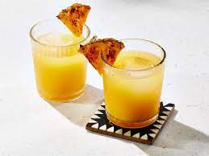

Grilled Pineapple Mai Tai Recipe

Mai Tai with Grilled Pinepple
Grilling the citrus for this mai tai brings the natural flavors to the front, making this one cocktail that goes down deliciously easy.
Grill up an entire pineapple and a few more limes to make easy beach cocktails for a crowd. Garnish with grilled orange wheels and Bing cherries.
Ingredients
- 1/4 cup white sugar
- 1 lime, halved, or more to taste
- 1/4 pineapple, cut into wedges
- ice
- 1 fluid ounce gold rum
- 1/2 fluid ounce silver rum
- 1/2 fluid ounce triple sec
- 1/2 fluid ounce orgeat almond syrup
Directions
- Preheat grill for medium heat and lightly oil the grate.
- Place sugar in a shallow bowl. Dip lime halves in sugar to coat.
- Grill lime and pineapple wedges, turning occasionally, until lightly browned, 5 to 10 minutes. Remove from grill and let cool.
- Fill a cocktail shaker and Old Fashioned glass with ice.
- Squeeze 1/2 fluid ounce lime juice and 1 fluid ounce pineapple juice into the shaker. Add gold rum, silver rum, triple sec, and orgeat syrup.
Cover and shake until the outside of shaker has frosted.
Strain into the glass and garnish with a grilled pineapple wedge.